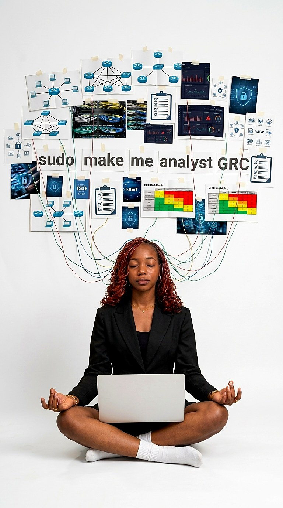

Justine Nutsule
Licenciée en cybersécurité, tournée vers la GRC
Je me spécialise en cybersécurité, des réseaux à la gouvernance des risques, et j'aime expliquer clairement ce que je fais.
sudo make me analyst GRC
Voir mes projets Télécharger mon CV
Stage de technicienne réseau, Lotié Télécom (2026)
Certifiée CompTIA Security+ (mai 2026)
Qui suis-je ?
Je suis licenciée en cybersécurité (École Supérieure des Affaires, ESA-TG, à Lomé) et titulaire de la certification CompTIA Security+. Mon terrain d'entraînement : les tests d'intrusion en laboratoire, l'analyse de vulnérabilités, les réseaux et le contrôle d'accès, avec un projet de recherche sur le NAC et l'authentification 802.1X.
Ce qui m'attire maintenant, c'est le point de rencontre entre la technique, l'analyse des risques et la GRC (gouvernance, risques et conformité). J'ai aussi une vie en dehors des terminaux : je prends la parole en public et j'écris.
2certifications : CompTIA Security+ et Junior GRC Analyst
3distinctions en écriture et en art oratoire
2langues de travail : français et anglais
Mon objectif
Devenir analyste GRC : mettre ma base en cybersécurité au service de la gouvernance, des normes et de l'analyse des risques.
Cybersécurité, normes, audits, matrices de risques : je construis les deux moitiés du métier, la technique et la gouvernance.
- 1
Cybersécurité
Tests d'intrusion, analyse de vulnérabilités, Security+ : protéger les systèmes.
- 2
Réseaux
Schémas, VLAN, contrôle d'accès 802.1X : le terrain où je m'entraîne.
- 3
Normes
ISO, NIST : les cadres qui structurent la sécurité.
- 4
Audit
Checklists et contrôles : vérifier que les règles sont vraiment appliquées.
- 5
Risques
Matrices de risques : décider quoi traiter en premier.

Parcours
Certifications
Projets
Mes projets viennent directement de mon GitHub : quand j'en publie un, il apparaît ici.
Ma voix
La cybersécurité demande de bien expliquer. J'ai appris à le faire à l'oral comme à l'écrit.
À l'oral
À l'écrit
Blog
Notes sur la cybersécurité, la GRC et ce que j'apprends en route.
Contact
Un stage, une question, une collaboration ? Écris-moi.